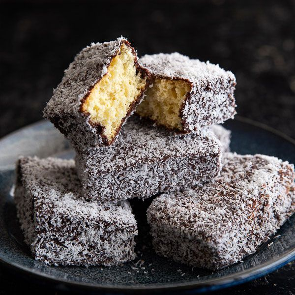
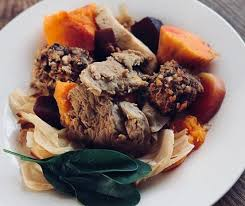

Navigation

Lamington (Australie)
- Ingrédients :
- Biscuit génoise
- Chocolat fondu
- Noix de coco râpée
- Instructions :
- Coupez la génoise en cubes.
- Trempez dans le chocolat puis roulez dans la noix de coco.

Hāngi (Nouvelle-Zélande)
- Ingrédients :
- Viande (agneau, poulet...)
- Légumes (patate douce, carotte...)
- Feuilles ou sacs de cuisson
- Instructions :
- Enveloppez viande et légumes, puis cuisez-les dans un four creusé dans la terre.

Pavlova (Australie/Nouvelle-Zélande)
- Ingrédients :
- Blancs d'œufs
- Sucre
- Crème fouettée
- Fruits frais
- Instructions :
- Préparez une meringue, cuisez-la doucement.
- Garnissez de crème et de fruits.

Poi (Polynésie)
- Ingrédients :
- Taro
- Instructions :
- Faites cuire le taro, puis écrasez-le jusqu'à obtenir une pâte lisse.

Kokoda (Fidji)
- Ingrédients :
- Poisson cru
- Lait de coco
- Citron vert
- Légumes (tomate, oignon...)
- Instructions :
- Faites mariner le poisson dans le citron vert.
- Ajoutez lait de coco et légumes avant de servir frais.

Damper (Australie)
- Ingrédients :
- Farine
- Eau
- Sel
- Levure chimique
- Instructions :
- Mélangez les ingrédients, formez un pain rond.
- Faites cuire dans la braise ou au four.